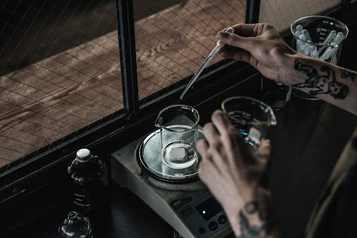
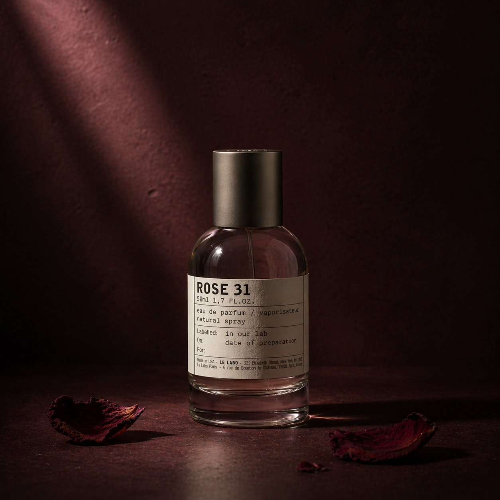

CRAFT ★ EDITOR'S PICK완벽한 불완전함 : 핸드 블렌딩 철학
기계가 대체할 수 없는 인간의 손길, 그 미세한 온도가 향에 미치는 영향에 대하여.
조향사 Hana Kim이 4주간의 배치 기록을
토대로 풀어낸 노트.
LABORATORY NOTES
향료에 대한 고찰부터 도시의 영감까지.
르라보의 시선으로 담아낸 깊이 있는 에디토리얼을 만나보세요.
SPRING ISSUE · APR 2026
 INGREDIENT
INGREDIENT
· 7m READ
호주 대륙의 거친 땅에서 자라난 나무가
당신의 살결에 닿기까지의 여정.

SEASONAL· 5m READ
그라스의 태양이 절정에 달하기 전,
향이 가장 순수한 순간의 기록.
 SCENT
SCENT
· 6m READ
후각은 감정의 언어.
향이 어떻게 우리의 정체성을 형성하는지에 대하여.
· 9m READ
7자리 코드 안에 산지 · 연도 · 연구자가
모두 담긴 르라보의 추적 시스템.
 LAB
LAB
· 4m READ
3월 마지막 주, 그라스의 공방에서 채집된
9가지 노트의 즉흥 기록.
 INGREDIENT
INGREDIENT
· 5m READ
아틀라스 산맥의 시더우드가 모든
우디 향의 골격을 이루는 이유.
6 of 85 stories shown

EDITORIAL MOMENT
Editorial Lead, LE LABO Journal
EDITOR'S NOTE
이번 시즌은 향 자체보다 '향이 쓰이는 장면과 맥락'에 초점을 맞췄습니다.
르라보 저널은 단순한 기록을 넘어 당신의 의사결정을 돕는
도구가 되길 바랍니다.
STAY SUBSCRIBED
매월 1일, 계절의 향과 연구소의 이야기를 이메일로 전해드립니다. 12,000여 명의 독자가 함께 읽고 있습니다.
언제든 한 번의 클릭으로 구독 해제할 수 있습니다.